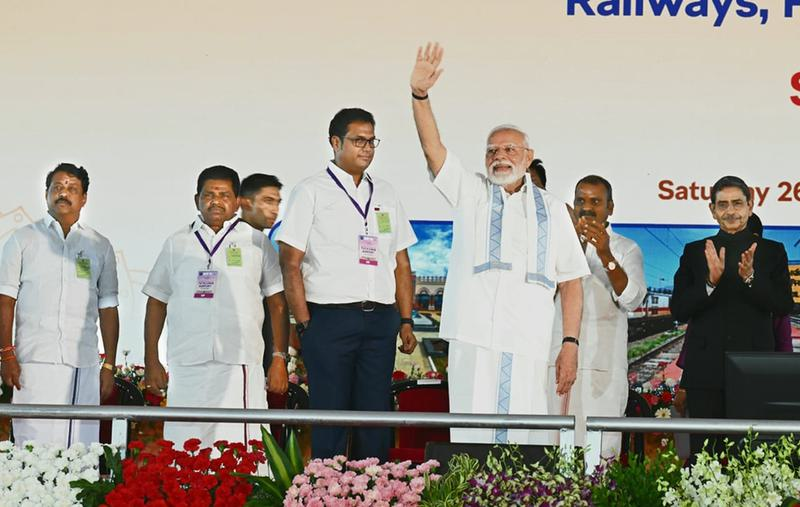

Central Projects to Create 'Developed Tamil Nadu', Says Modi
July 27, 2025
Economy, Governance, Infrastructure
The Hindu
Prime Minister Narendra Modi highlighted the Union government's significant investment in infrastructure projects in Tamil Nadu, asserting that these initiatives are crucial for achieving the vision of 'Viksit Tamil Nadu' and contributing to 'Viksit Bharat'.

Prime Minister Modi inaugurating infrastructure projects in Tamil Nadu.
English Notes:
- Vision for Development: PM Modi stated that Union government-funded infrastructure projects in Tamil Nadu, with an outlay over ₹3 lakh crore, are key to realizing 'Viksit Tamil Nadu' and 'Viksit Bharat'.
- Infrastructure Focus: The government prioritizes infrastructure development nationwide, with unprecedented facelifts in port, rail, and energy sectors from J&K to Tamil Nadu and Assam.
- Investment in Tamil Nadu: Since 2014, over ₹3 lakh crore has been released for Tamil Nadu's infrastructure, three times more than the previous UPA government.
- Key Projects & Benefits:
- New terminal building at Thoothukudi airport inaugurated.
- North cargo berth at VOC Port, Thoothukudi, and six-lane VOC Port Road.
- Four-lane Sethiyathope-Chozhapuram Highway.
- These projects will significantly boost trade opportunities and local employment.
- Healthcare & Livelihood: NDA government sanctioned 11 new medical colleges for Tamil Nadu and is developing harbours to improve livelihoods.
- India-UK FTA: Termed a 'historic' move, expected to open unprecedented export opportunities for Indian products (over 99% 'Make in India' products available at lower prices in UK).
- Economic Impact of FTA: Increased demand will lead to more production, generating employment in micro and small industries, enhancing global faith in India's economy.
- Defence & Security: Mentioned home-grown weapon systems used in 'Operation Sindoor' destroyed terrorist hideouts, giving sleepless nights to terror sponsors.
हिंदी नोट्स (Hindi Notes):
- विकास का दृष्टिकोण: पीएम मोदी ने कहा कि तमिलनाडु में केंद्र सरकार द्वारा वित्तपोषित बुनियादी ढांचा परियोजनाएं, ₹3 लाख करोड़ से अधिक के परिव्यय के साथ, 'विकसित तमिलनाडु' और 'विकसित भारत' के सपने को साकार करने की कुंजी हैं।
- बुनियादी ढांचे पर ध्यान: सरकार देश भर में बुनियादी ढांचे के विकास को सर्वोच्च प्राथमिकता दे रही है, जम्मू-कश्मीर से तमिलनाडु और असम तक बंदरगाह, रेल और ऊर्जा क्षेत्रों में अभूतपूर्व बदलाव लाए जा रहे हैं।
- तमिलनाडु में निवेश: 2014 से, तमिलनाडु के बुनियादी ढांचे के लिए ₹3 लाख करोड़ से अधिक जारी किए गए हैं, जो पिछली यूपीए सरकार द्वारा राज्य को दिए गए धन से तीन गुना अधिक है।
- प्रमुख परियोजनाएं और लाभ:
- थूथुकुडी हवाई अड्डे पर नए टर्मिनल भवन का उद्घाटन किया गया।
- वीओसी पोर्ट, थूथुकुडी में उत्तरी कार्गो बर्थ और छह-लेन वीओसी पोर्ट रोड।
- चार-लेन सेथियाथोप-चोलपुरम राजमार्ग।
- ये परियोजनाएं व्यापार के अवसरों और स्थानीय रोजगार सृजन को महत्वपूर्ण रूप से बढ़ावा देंगी।
- स्वास्थ्य सेवा और आजीविका: एनडीए सरकार ने तमिलनाडु के लिए 11 नए मेडिकल कॉलेज स्वीकृत किए हैं, और केंद्र आजीविका में सुधार के लिए बंदरगाहों का भी विकास कर रहा है।
- भारत-यूके एफटीए: इसे एक 'ऐतिहासिक' कदम बताया गया है, जिससे भारतीय उत्पादों के लिए यूके में अभूतपूर्व निर्यात के अवसर खुलने की उम्मीद है (99% से अधिक 'मेक इन इंडिया' उत्पाद यूके में कम कीमत पर उपलब्ध होंगे)।
- एफटीए का आर्थिक प्रभाव: बढ़ती मांग से अधिक उत्पादन होगा, जिससे सूक्ष्म और लघु उद्योगों में रोजगार सृजित होगा, और भारत की अर्थव्यवस्था में वैश्विक विश्वास बढ़ेगा।
- रक्षा और सुरक्षा: 'ऑपरेशन सिंदूर' में इस्तेमाल किए गए स्वदेशी हथियार प्रणालियों का उल्लेख किया, जिन्होंने आतंकवादियों के ठिकानों को नष्ट कर दिया और आतंक के प्रायोजकों की नींद हराम कर दी।